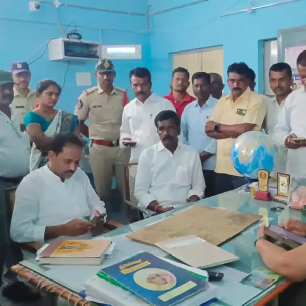
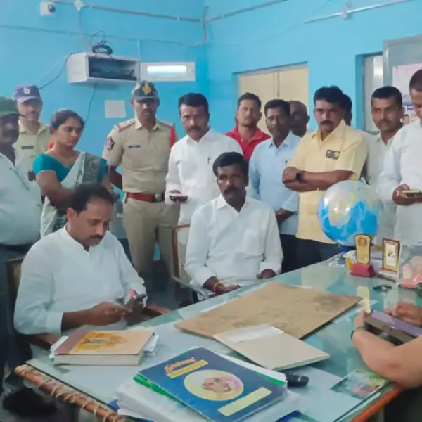
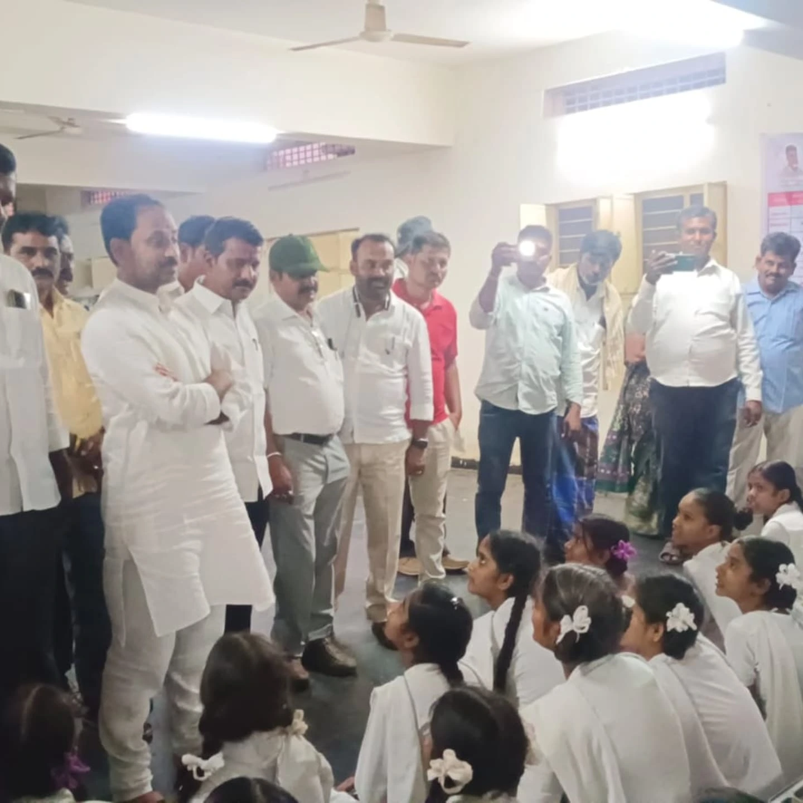

15 March
శాసనసభ్యులు కందికుంట వెంకటప్రసాద్ గారి ఆకస్మిక తనిఖీ – Tribal Welfare Commissioner కు ఫిర్యాదు
కదిరి నియోజకవర్గ శాసనసభ్యులు శ్రీ కందికుంట వెంకటప్రసాద్ గారు తనకల్లు మండలంలోని సిజి ప్రాజెక్ట్ ట్రైబల్ గురుకులం బాలికల పాఠశాల మరియు హాస్టల్ పై ఆకస్మికంగా తనిఖీ నిర్వహించారు. తనిఖీ సందర్భంగా పాఠశాల ఉపాధ్యాయుల హాజరు పుస్తకాన్ని పరిశీలించగా, కొంతమంది ఉపాధ్యాయులు విధులకు హాజరు కాకుండానే ముందుగా రిజిస్టర్ లో సంతకాలు పెట్టి అటెండెన్స్ వేసుకోవడం గుర్తించారు.
ఈ విషయంపై ఎమ్మెల్యే గారు తీవ్ర ఆగ్రహం వ్యక్తం చేశారు. విద్యార్థుల భవిష్యత్తుతో చెలగాటం ఆడే నిర్లక్ష్యాన్ని సహించబోమని స్పష్టం చేశారు. ప్రిన్సిపల్ గారిపై ఆగ్రహం వ్యక్తం చేసి, తక్షణమే దీనిపై సమగ్ర విచారణ జరిపించాలని సూచించారు.
అంతేకాక, జూనియర్ కళాశాల అనుమతులు తనకల్లు మండలంలో ఉన్నప్పటికీ, ఆ కళాశాల కదిరిలో అద్దె భవనంలో నిర్వహించబడుతున్న విషయాన్ని గమనించి, ఇది విద్యార్థులకు తీవ్ర అన్యాయం అని పేర్కొన్నారు. ఈ అంశంపై తక్షణ చర్యలు తీసుకోవాలని Tribal Welfare Commissioner గారికి ఫోన్ ద్వారా సమాచారం అందించారు.
ఈ కార్యక్రమంలో తనకల్లు మండల కూటమి నాయకులు, సంబంధిత అధికారులు పాల్గొన్నారు. విద్యార్థుల భవిష్యత్తును దృష్టిలో ఉంచుకుని, నిర్లక్ష్యంగా వ్యవహరిస్తున్న వారిపై కఠిన చర్యలు తీసుకోవాలని ఎమ్మెల్యే గారు డిమాండ్ చేశారు.
కదిరి ప్రజలకు సంకేతం:ఈ తనిఖీ ద్వారా ఎమ్మెల్యే గారు విద్యా వ్యవస్థలో జరుగుతున్న లోపాలను వెలుగులోకి తెచ్చారు. ప్రభుత్వ స్కూళ్లలో విద్యార్థులకు మంచి విద్య, వసతులు అందాలని కందికుంట వెంకటప్రసాద్ గారు స్పష్టం చేశారు. ప్రభుత్వ పథకాలు, సంక్షేమ కార్యక్రమాలు అన్ని వర్గాల విద్యార్థులకు అందుబాటులోకి రావాలనే లక్ష్యంతో ఆయన పనిచేస్తున్నారు